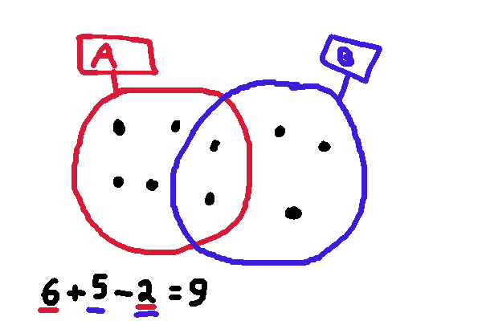
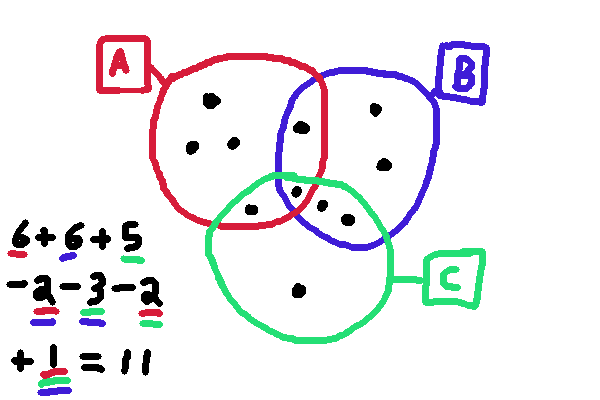
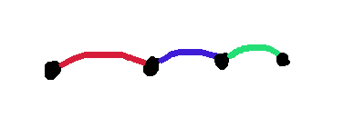
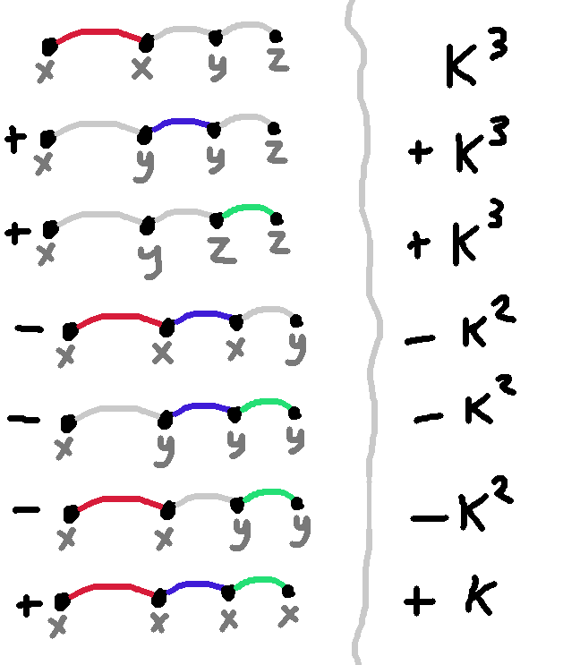
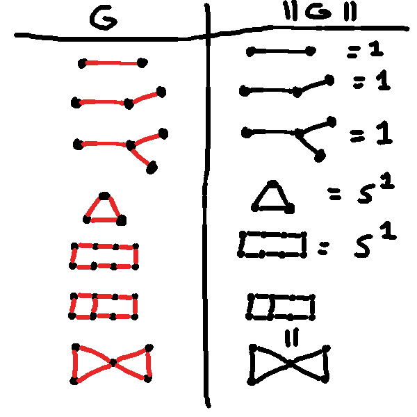
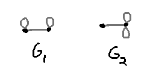
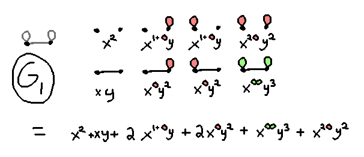
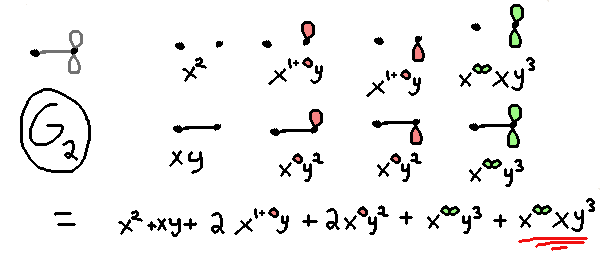

Chromatic Type Polynomials
Inclusion-Exclusion
In the following diagram, how do we count the dots that are either inside circle $A$ or circle $B$?

It's the sum of the dots in circle $A$, plus the dots in circle $B$, minus the dots that are in both, because
by adding up the circles, we've double-counted their intersection. We could write this as
\[|A \cup B| = |A| + |B| - |A \cap B|\]
What do we do if we want to count how many dots are in more overlapping circles? Well, by using the above,
we can reason that
\[ | A \cup (B \cup C)| = | A | + |B \cup C| - |A \cap (B \cup C)| \]
\[= | A | + |B | + | C| - |B \cap C| - |A \cap (B \cup C)|\]
But $\cap$ distributes over $\cup$: $A \cap (B \cup C) = (A \cap B) \cup (A \cap C)$. So in fact
\[ | A \cup (B \cup C)| = | A | + |B | + | C| - |B \cap C| - |(A \cap B) \cup (A \cap C)|\]
\[= | A | + |B | + | C| - |B \cap C| - |A \cap B | - | A \cap C| + |A \cap B \cap A \cap C|\]
\[= | A | + |B | + | C| - |B \cap C| - |A \cap B | - | A \cap C| + |A \cap B \cap C|\]
We have to subtract the overcounts in the overlaps between each
two regions, and add back the resulting undercount in the
triple overlap.
For example, the number of dots in the following diagram is 11:

In general, we find that if we want to count the size of the union of $n$ sets, $A_1, \ldots, A_n$, we need
to take contributions from, for every finite subset $S$ of $1,\ldots, n$, the intersection of all the $A_s$ where
$s$ is drawn from $S$, either adding it or subtracting it depending on whether $|S|$ is even or odd.
\[ \left| \bigcup_{i} A_i \right| = \sum_{\emptyset \ne S \subseteq 1,\ldots, n } (-1)^{|S|+1} \left|\bigcap_{s\in S} A_s\right|\]
This is the inclusion-exclusion principle.
Graph Colorings
How many ways are there of assigning elements of some set $X = \{x, y, z, \ldots\}$ to the vertices of the graph

such that at least one edge gets the same element for both its endpoints? This "at least one" is a big disjunction,
so we can use inclusion exclusion. Let's say $|X| = K$. Then we find there are $3K^3 - 3K^2 + K$ ways of doing it.

Symbolically, we're computing
\[ \sum_{\emptyset \ne S \subseteq E } (-1)^{|S|+1} K^{k(S)} \]
where $E$ is the set of edges in the graph, and $k(S)$ is the number of connected components of the graph if
we include only the edges $S$.
Now let's consider the "opposite" question: How many ways are
there of assigning elements of $X$ to vertices such that no
edges have the same assignment for both endpoints? (This is
a "graph
coloring") All we have to do is subtract the answer to the
previous question from the total number of colorings, which is
$K^4$ in this case because there are four vertices. This actually simplifies our sum because we don't have to exclude
the case where $S$ is empty. We write $\chi(K)$ for the number of colorings of the graph with $K$ colors,
and find that
\[ \chi(K) = \sum_{ S \subseteq E } (-1)^{|S|} K^{k(S)} \]
This is a polynomial in the variable $K$, the chromatic polynomial of a graph.
Random Graph Statistics
Suppose we have a graph, and for every edge flip a coin with heads
probability $p$, and if it comes up tails, delete the edge. What's
the expected number of ways to color the graph with $K$ colors such that every
edge has the same colors at both endpoints?
\[ \sum_{ S \subseteq E } p^{|S|} (1-p)^{|E|-|S|}K^{k(S)} \]
This appears basically the same as our previous polynomial, except for the normalization factor $(1-p)^{|E|}$
and the minor inconvenience that no particular value of $p$ will actually make $p / (1-p)$ equal $-1$.
So here's a polynomial that generalizes both cases, by setting $y$ to either $-1$ or $p / (1-p)$, however we want:
\[ T(x, y) = \sum_{ S \subseteq E } y^{|S|} x^{k(S)} \]
To recap what we've done, this is essentially the chromatic
polynomial with the $-1$ generalized to $y$, and the $K$ renamed
to $x$. It turns out this is equivalent to
the Tutte
polynomial up to a change of variables. It is called the
"Random Cluster Model" on that wikipedia page, except they use
variable names $q, w$ instead of $x, y$, respectively.
The Chromatic Type Polynomial
Everything we've done up
until now is about numbers and counting. But it's actually quite
easy to reinterpret the same expression above as being a
computation of a type (in the sense of Martin-Löf type
theory, & even Homotopy type theory) in terms of other types.
To start, replace numeric variables $x$ and $y$ with type variables $x$ and $y$.
Then we replace the numeric sum $\sum_{S \subseteq E}$ with
a dependent sum type $(H : \mathrm{Subgraph}\ G) \x \dash$ over all (edge-wise) subgraphs of $G$.
The number that you get by raising $y$ to the power of $|S|$ can be replaced with the actual type $E_H \to y$
of functions
from the edges $E_H$ of the subgraph $H$, to the type $y$. Similarly, the expression $x^{k(S)}$, which counts the connected
components of the subgraph $S$, and raises $x$ to that power, can be replaced with $\real S \to x$,
functions from the realization $\real H$ (more about that in a second) of the
graph $H$ as a type, to the type $x$.
So we write
\[T(x, y) = (H : \mathrm{Subgraph}\ G) \x (E_H \to y) \x (\real H \to x) \]
Realization of a Graph
We still need to define what the realization of a graph is.
It is defined as a Higher Inductive Type:
we say $\real G$ is defined as the type such that
- For every vertex $v$ in the vertices of $G$, there is an element of $\real G$, call it $\iota v$.
- For every edge $e$ in $G$ that has endpoints $v_1, v_2$, there is an equality $\iota v_1 \equiv \iota v_2$ in $\real G$.
By defining it this way, we're essentially saying that the realization of a graph is the type where all the
edges become equalities between the vertices they connect.
Here's some examples:

It is worth noting that every cycle in a
graph becomes a loop (i.e. non-trivial self-equality) in the realization of that graph.
The realization of every connected graph without cycles is just the unit type $1$.
The realization of every graph that has exactly one cycle is the same; they're all the circle
type $S^1$, and so on. If the type of vertices and edges of $G$ are mere sets,
then the realization of $G$ basically just counts cycles.
The Chromatic Type distinguishes more graphs than the Tutte Polynomial
Consider the following two graphs: 
We can manually compute the chromatic type of $G_1$, and write it
'as if' it were a polynomial by considering all edge-wise
subgraphs, and adding a term for each one with $x$ raised to the
power of the realization of the subgraph, and $y$ raised to the
power of how many edges the subgraph it has. This will look like a
polynomial, except some of the exponents will involve circle
types, or other types with more loops, according to the homotopy
structure of the subgraphs.

We can do thes same for $G_2$:

Notice that it's very similar to the polynomial for $G_1$, but the last term is different.
Now the Tutte polynomials (well, technically, the Random Cluster Model polynomials) for these
graphs are both
\[ x^2 + xy + 2x^2y + 2xy^2 + xy^3 + x^2y^3 \]
What's going on is that the Tutte polynomial bakes in
a set-truncation operation --- it can only count
how many connected components there are. It's as if it's
collapsing all of the loop type, the double-loop type, and so on, to
the unit type $1$. In this way it conflates the $x^○x^○= x^{2○}$ from the polynomial of $G^1$,
and the $x^{○\!○}x^1$ that appears in the polynomial for $G_2$, and sees both of them as merely $x^2$.
On the other hand, the chromatic type, by computing the
realization of a graph, can tell these apart: it sees not only the quantity of
connected components, but also which components have holes in
them, and how many.
(I have a suspicion that the known Khovanov-homology-esque
categorifications of graph polynomials may also do this refined
counting, but I don't know enough about them to say so for sure.)
Contraction-Deletion
There's a standard result
you can prove about chromatic (and Tutte) polynomials, that connects the "all-at-once" characterization
as a sum over all possible subgraphs on the one hand, with a nice inductive characterization in terms of a single edge.
You would say something like:
- For a graph $G$ with no edges, its polynomial is just $x$ raised to the power of how many vertices it has,
i.e. $T_G(x, y) = x^{V_G}$.
- For any other graph $G$, and any edge $e$ in $G$, the polynomial of $G$ can be specified in terms
of the graph $G - e$ arising from deleting the edge $e$, and the graph $G / e$ arising from contracting the edge
$e$, and joining together the vertices that were its endpoint.
\[ T_G(x, y) = T_{G - e}(x, y) + yT_{G / e}(x, y) \]
To the extent that these graph polynomials are about the expected value of some statistic for independent random behavior
of the edges of a graph, the inductive step of this description is essentially about marginalizing against the behavior
of a single edge.
How do we generalize this to the chromatic type case? It's
easier to talk about adding an edge rather than deleting
it. So if $\partial = (\partial_1, \partial_2)$ is a pair of
vertices in $G$, let $G + \partial$ be the graph with one
additional edge between the vertices in $\partial$, and let $G / \partial$ be the result of actually adding an equality path
between the vertices in $G$. That is, the type of vertices of $G / \partial$ is a higher inductive type derived from the
vertex type of $G$.
Given these definitions, we can claim
- For a graph $G$ with no edges, its polynomial is functions from its vertex type to the variable $x$,
\[ T_G(x, y) \equiv {V_G} \to x\]
- For any graph $G$, and any edge boundary $\partial : V_G \x V_G$, we have
\[ T_{G + \partial}(x, y) \equiv T_G(x, y) + y \x T_{G / \partial}(x, y) \]
Here $+$ refers to the sum type and $\x$ to the product type constructor, and all equalities are equalities of types,
which under assumption of the univalence axiom, means there is a bijection between types.
Non-boolean Edge Behavior
The preceding assumes that edges either contract or delete. We can also make a modest generalization, and
say that there is some index type $J$ of "actions edges can take", and a type $Q$ equipped with a map $\pi : Q \to J$
such that if the fiber over a given $j : J$ is empty, then "what the edge does" is delete, and if the fiber has
one element, "what the edge does" is contract, and if the fiber has more elements, then the edge may turn into a collection
of equality paths with greater multiplicity.
Instead of taking the dependent sum over all subgraphs (which are really functions $E \to 2$) we take the sum over
all maps $E \to J$ instead. The definition of the chromatic type is now
\[T(x, y) = (S : E \to J) \x ((S \star \pi) \to y) \x (\real {G|_S} \to x) \]
where $S \star \pi$ is the pullback of $S : E \to J$ and $\pi : Q \to J$, and
$G|_S$ is the 'restriction' of $G$ to $S$, where we have replaced every edge $e$ in $G$ with one edge for
every point in the fiber $\mathsf{fib}_\pi (S(e))$. Our previous definition of $T$ is recovered when $Q = 1$ and $J = 2$.
The contraction-deletion theorem now turns the discrete sum over
the two possibilities (that an edge is deleted or contracted) into
a dependent sum over the type $J$:
\[ T_{G + \partial}(x, y) = (j : J) \x (\fib j \to y) \x T_{G / \partial^{\fib j}}(x, y) \]
Here $G / \partial^X$ for a type $X$ means $G$ with the vertex type replaced by a higher inductive type
that has been equipped with extra equality paths between the vertices in $\partial$, one for
every element of $X$.
Formalization
I formalized the proof of this
contraction-deletion theorem in cubical agda. I found it quite
pleasant, especially compared to earlier failed attempts (due not
to any fundamental limitation of plain agda, but just from my lack
of patience) without the cubical extension. The code is
in http://github.com/jcreedcmu/chromatic-type-polynomial.